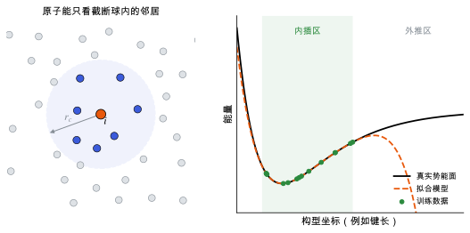

机器学习势
用数据拟合势能面：局域性假设、描述符与训练数据，以及外推时为什么会出错。
直观阅读需要
- 多电子问题与 Born–Oppenheimer 近似：势能面只是原子坐标的函数
- 回归与过拟合
完整推导还需要
只是提示，不需要先读完才能往下看。
直觉直观解释
DFT 算一个构型的能量和力要几分钟到几小时。结构搜索、分子动力学、声子要算成千上万个构型，DFT 负担不起。机器学习势 (machine learning interatomic potential, MLIP) 的思路是：先用 DFT 算一批构型，再训练一个模型，让它直接从原子坐标预测能量、力和应力，速度快几个数量级。
几乎所有 MLIP 都建立在一个假设上：局域性。总能写成每个原子的能量之和，每个原子的能量只取决于它周围截断半径 r_c 内的邻居 [Behler & Parrinello 2007]。这让模型可以用于任意大小的体系，计算量与原子数成正比。
关键的限制：模型只在训练数据覆盖的构型附近可靠（内插）。遇到训练集之外的构型（外推），它可能给出看起来合理、实际上完全错误的能量。

| 符号 | 是什么 | 图里对应 |
|---|---|---|
| i | 正在计算原子能的中心原子 | 左图橙色原子 |
| r_c | 截断半径 | 左图虚线圆的半径 |
| 蓝色原子 | 截断球内的邻居，进入描述符 | 左图蓝点 |
| 训练数据 | DFT 算过的构型 | 右图绿点与绿色区域 |
| 拟合模型 | MLIP 的预测 | 右图橙色虚线 |
定义与公式数学与推导
原子能 E_i 本身不是可观测量，只有总和 E 有物理意义。
描述符要满足什么
能量在整体平移、旋转和同种原子交换下不变，所以描述符也必须不变。常见做法：用距离和角度构造对称函数 [Behler 2011]，或者把邻居密度展开成径向函数乘球谐函数，再取旋转不变的组合（SOAP）[Bartók et al. 2013]。更新的模型不再手工设计描述符，而是用等变神经网络学习（见 对称性与等变性 与 MACE 与等变消息传递）。
力与应力
其中 \mathbf{r}_k 是原子 k 的坐标，\Omega 是晶胞体积，\varepsilon_{\alpha\beta} 是应变。力和应力由能量求导得到，因此自动满足能量守恒（力是保守力）。
内插、外推与主动学习
模型的误差在训练数据附近小，远离时不受控。主动学习的思路是：用模型跑模拟，用某种不确定性指标（模型集成的分歧、或描述符相对训练集的“外推程度”）挑出模型没把握的构型，送去做 DFT，加入训练集，再训练 [Podryabinkin & Shapeev 2017]。
在本研究线里的样子对应与边界
- 预优化：在结构搜索中，先用 MLIP（例如 MACE 与等变消息传递）把大量候选结构优化到局部极小，再挑能量低的做 DFT（见 晶体结构预测：搜索与排序）。
- 标签必须一致：训练集里所有构型要用同一套 DFT 设置（泛函 PBE-D3、POTCAR、截断能、k 点密度），否则模型学到的是设置之间的差异（见 收敛测试）。
- 覆盖什么构型：只用平衡结构训练，模型对应变、位移、高能候选结构都是外推。弹性、声子和压电需要的恰恰是偏离平衡的小扰动。
- 验证不只看 RMSE：还要在下游任务上验证，比如弹性常数、声子、多晶型能量排序是否和 DFT 一致（见 基准与验证）。
常见坑对应与边界
- 测试集和训练集来自同一条轨迹：相邻帧高度相关，测试误差会严重低估真实误差。
- 能量 RMSE 很小但排序错误：多晶型能量差可能只有几 meV/原子，和模型误差同一量级。
- 力看起来准，应力没训练：变胞优化会把晶胞带到错误的体积。
- 模拟中途“爆炸”：原子靠得太近时进入模型从未见过的区域，能量可能反而下降。这是外推问题的典型表现。
检验自己对应与边界
子条目
- MACE 与等变消息传递MACE 怎样用高阶等变消息传递表示多体相互作用，预训练通用势在分子晶体上的适用范围。
- 机器学习势中的长程静电与电场响应局域的机器学习势只给能量、力和应力，没有电荷与极化；要算介电、压电这类对电场的响应，需要额外学习玻恩有效电荷或显式的静电项。
- 通用机器学习势的微调在预训练通用势上用少量目标体系数据微调：要多少数据、冻结哪些层、怎样不丢掉原有的弹性与振动性质，以及微调后的势能不能撑住结构搜索里远离平衡的构型。
参考资料
论文Behler & Parrinello 2007
尚未实际查阅，目前只是拟查阅书目
论文Behler 2011
尚未实际查阅，目前只是拟查阅书目
论文Bartók et al. 2010
尚未实际查阅，目前只是拟查阅书目
论文Bartók et al. 2013
尚未实际查阅，目前只是拟查阅书目
论文Podryabinkin & Shapeev 2017
尚未实际查阅，目前只是拟查阅书目
论文Unke et al. 2021
O. T. Unke et al., Machine Learning Force Fields, Chem. Rev. 121, 10142 (2021)
尚未实际查阅，目前只是拟查阅书目
分类机器学习 · 方法 · 研究线：机器学习势 · 状态：草稿